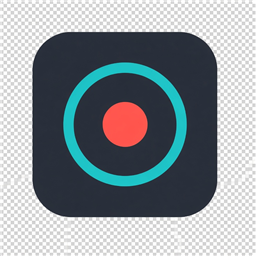

RecBoxScreen recording for Windows — without the OBS complexity. Capture a monitor at native resolution, with optional mic and system audio. No streaming. No scenes. No clutter.
Hide from the taskbar while recording so RecBox never appears in your video.
Pick any display. Output matches that monitor’s real resolution — no scaling.
Toggle each independently. NVIDIA Broadcast shows up as a normal mic when installed.
Low file size, Balanced, or Maximum quality — with hardware encode when available.
Clean dark interface with a one-click record control. Settings save automatically.
One PowerShell script downloads FFmpeg, builds, and launches. Or publish a portable folder.
Installers place RecBox under %LocalAppData%\Programs\RecBox (no admin),
create Start Menu shortcuts, and bundle FFmpeg.
Your settings stay in %AppData%\RecBox across upgrades.
Download RecBox-*-Setup.exe from
GitHub Releases and run it.
New versions: run the newer Setup — settings are preserved.
powershell -ExecutionPolicy Bypass -File .\Install-RecBox.ps1 -FromZip .\RecBox-1.0.0-win-x64.zip -DesktopShortcut -Launch
Or install/update from the latest GitHub Release:
powershell -ExecutionPolicy Bypass -File .\Install-RecBox.ps1 -FromGitHub -DesktopShortcut -Launch
powershell -ExecutionPolicy Bypass -File .\build-installer.ps1
Setup.exe. For day-to-day coding use run.ps1.
Minimize or close the window to send RecBox to the tray (next to the clock). Recording continues in the background without appearing in the capture.
Run run.ps1 or tools/download-ffmpeg.ps1, or place ffmpeg.exe in tools/ffmpeg.
Check Windows Sound settings. Install/enable NVIDIA Broadcast, then restart RecBox.
You need an active playback device (speakers/headphones) set as default. RecBox uses WASAPI loopback — no virtual cable needed.
Try borderless windowed mode. Elevated windows may need RecBox run as Administrator.
Default: %UserProfile%\Videos\RecBox. Use Open folder in the app.